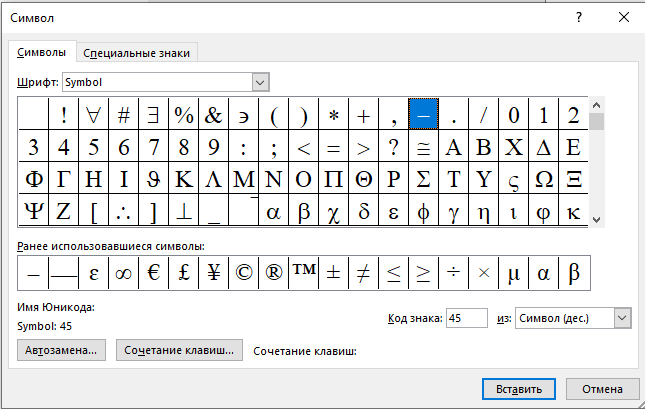

Задание 3. Вставка символов.
Вставьте после текста следующие символы (меню Вставка, команда Символ) (рис. 6).
Примечание. При выборе нескольких символов окно Символ можно не закрывать: последовательно выбирайте мышкой вставляемые символы и нажимайте кнопку Вставить.
©, §, ® – вкладка Специальные символы;
@, $, 3/4 – вкладка Символы, шрифт – обычный текст;
¥, £, € – вкладка Символы, шрифт – обычный текст, набор – Денежные символы;
Примечание. Если вы не видите нужных символов, необходимо в зоне «Шрифт» окна Символ выбрать другой вид шрифта.